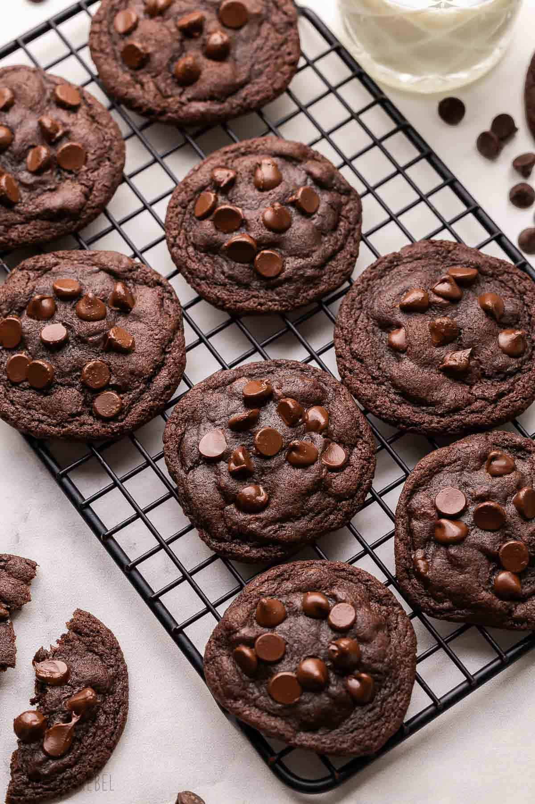

Premium Recipe Collection

For the true chocolate lover - an indulgent masterpiece that combines rich cocoa dough with chunks of premium dark chocolate. These cookies are intensely chocolatey, fudgy, and utterly irresistible.
⏱️ 10 minutes
⏱️ 15 minutes
⏱️ 10 minutes prep + 12 minutes bake